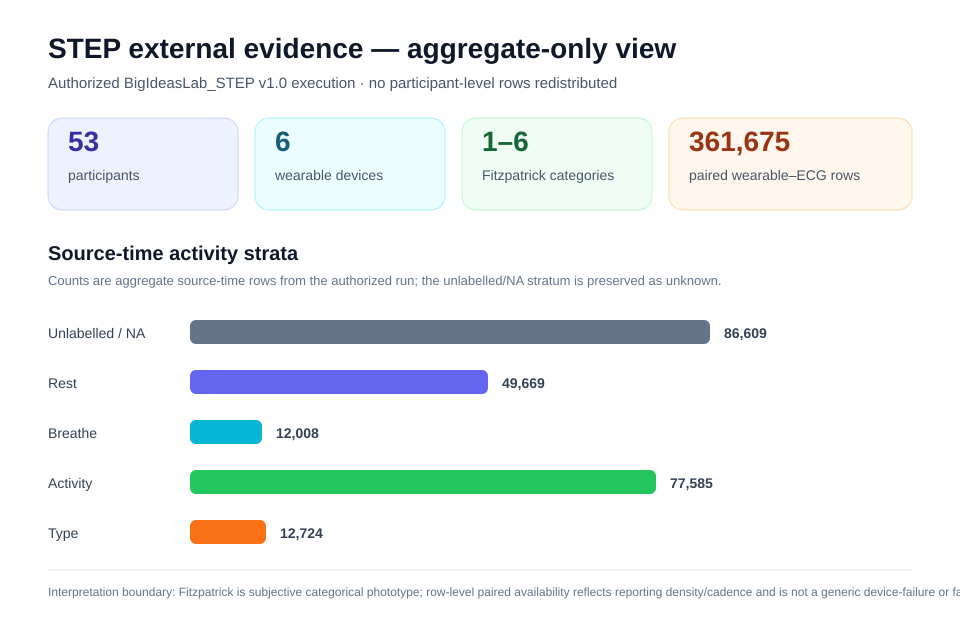

PPG pigmentation & measurement-equity audit¶
Start with the scientific question¶
The audit is designed to answer five questions in order:
- Was pigmentation actually measured?
- How, where, and with which instrument was it measured?
- Did raw PPG quality or data retention vary across the observed pigmentation range?
- Did paired reference accuracy vary?
- Do those patterns change across device/activity/acquisition context?
The module does not infer pigmentation from race or ethnicity, does not label a device "fair" or "unfair", does not apply a pigmentation-based correction, and does not automatically exclude observations because of pigmentation.
The three analytical layers¶
The layers are related but not interchangeable. A device can show stable MAE while retaining substantially fewer observations in part of the measured pigmentation range.


The figures above come from the deterministic synthetic worked example. They are deliberately constructed so retention varies while the HR-error mechanism is ITA-neutral.
Public Python-native surface¶
from gpbiometricspy.ppg_equity import (
compute_skin_ita,
validate_skin_pigmentation_metadata,
summarize_ppg_quality_by_pigmentation,
compare_ppg_reference_by_pigmentation,
ppg_pigmentation_audit,
)
These functions are additive Python-native methods and are intentionally outside the frozen 406-export R-parity registry.
1. Objective pigmentation and ITA¶
When CIELAB measurements are available, the package derives Individual Typology Angle as
The continuous ITA is primary. Conventional ITA categories are available for presentation but are not treated as interchangeable with Monk Skin Tone, Fitzpatrick phototype, Pantone, von Luschan, race, ethnicity, or melanin-index measurements.
validate_skin_pigmentation_metadata() preserves method, measurement site, PPG sensor site, instrument, assessor, raw CIELAB values, derived ITA, missingness provenance, and whether measurement/sensor sites match.
meta = validate_skin_pigmentation_metadata(
data,
metric="cielab",
l_star_col="skin_L_star",
a_star_col="skin_a_star",
b_star_col="skin_b_star",
method="colorimetry",
measurement_site="pigmentation_site",
sensor_site="sensor_site",
instrument_manufacturer="instrument_vendor",
instrument_model="instrument_model",
missing_reason_col="pigmentation_missing_reason",
)
Evidence classes¶
| Evidence class | Examples | Analytical default |
|---|---|---|
| Objective | ITA, CIELAB-derived ITA, melanin index | continuous descriptive association + optional strata |
| Subjective | Monk, Fitzpatrick, Pantone, von Luschan | descriptive strata only |
| Demographic proxy | race, ethnicity | not treated as pigmentation |
If only race/ethnicity is supplied, the integrated report explicitly records that pigmentation was not measured and skips pigmentation-stratified optical analysis.
2. Raw PPG quality¶
summarize_ppg_quality_by_pigmentation() reuses the existing Gazepoint HRP waveform-quality path and adds descriptive PPG SQIs.
quality = summarize_ppg_quality_by_pigmentation(
data,
participant_col="participant",
ppg_col="HRP",
pigmentation_col="ita_degrees",
pigmentation_metric="ita",
time_col="time_s",
group_cols=["activity"],
sampling_rate_hz=60,
n_boot=1000,
random_state=20261003,
)
A robust AC amplitude is
with
The spectral signal-to-noise statistic is
The quality table also retains finite/missing proportions, flatness, sampling-rate provenance, beat-template correlation, and the existing waveform-QC status.

No one SQI automatically defines scientific validity.
3. Retention as its own outcome¶
The reference-analysis denominator is intentionally different from the paired-error denominator. If a reference measurement exists but the candidate PPG-derived value is absent, the row contributes to retention even though it cannot contribute to MAE.
For objective pigmentation, a descriptive retention association is estimated conceptually as
where repeated observations remain clustered within participant.
The reported odds ratio is scaled per 10 pigmentation units:
This is an association, not a causal optical mechanism.
For datasets such as STEP, where devices report at materially different cadences, a row-level retention field may primarily represent paired availability/reporting density on the source time grid. It must not automatically be interpreted as generic device missingness or dropout.
4. Reference agreement¶
agreement = compare_ppg_reference_by_pigmentation(
data,
participant_col="participant",
reference_col="ecg_hr",
candidate_col="ppg_hr",
pigmentation_col="ita_degrees",
pigmentation_metric="ita",
metric_name="heart_rate",
device_col="device",
condition_col="activity",
n_boot=1000,
random_state=20261003,
)
The paired-measurement outputs include
and Bland--Altman limits
Lin's concordance correlation coefficient is
The result object keeps agreement, bootstrap confidence intervals, pigmentation strata, continuous associations when scientifically appropriate, retention association, and row-level analysis flags separate.
5. Participant-cluster uncertainty¶
Waveform and repeated-HR rows from the same participant are not independent. The bootstrap therefore resamples participants rather than individual signal samples.
For bootstrap replicate \(b\),
where participant identifiers are sampled with replacement and all their rows are retained together. The default 95% interval uses the 2.5th and 97.5th percentiles of the bootstrap distribution.
6. Integrated audit¶
result = ppg_pigmentation_audit(
data,
participant_col="participant",
ppg_col="HRP",
pigmentation_metric="cielab",
l_star_col="skin_L_star",
a_star_col="skin_a_star",
b_star_col="skin_b_star",
pigmentation_method="colorimetry",
pigmentation_site="finger",
sensor_site="finger",
instrument_manufacturer="Vendor",
instrument_model="Model",
time_col="time_s",
group_cols=["activity"],
sampling_rate_hz=60,
reference_col="ecg_hr",
candidate_col="ppg_hr",
metric_name="heart_rate",
device_col="device",
condition_col="activity",
n_boot=1000,
random_state=20261003,
)
Main result objects:
If no reference/candidate pair is supplied, reference agreement is returned as not_assessed. If only a demographic proxy is supplied, pigmentation analysis is not silently substituted.
Synthetic worked example¶
The deterministic synthetic example is the executable teaching and regression artifact for this method.
Open the complete synthetic worked example →
It documents the data-generating process in equations, explains every output family, regenerates the figures on this page, and demonstrates the central distinction:
Generate it with:
python scripts/generate_ppg_equity_synthetic_demo.py \
--output-dir docs/assets/ppg-equity \
--seed 20261003 \
--participants 36 \
--n-boot 400
For a conceptual walkthrough that connects these figures to the external-data evidence layer, read Auditing PPG measurement equity: separating signal quality, availability, and reference agreement →.
External evidence: STEP executed; ENCoDE deferred¶
The external-evidence programme is documented separately:
Open the external-evidence record →
The release-facing external empirical evidence is now STEP-only. ENCoDE remains an implemented future provenance/schema stress test but is not a prerequisite for this tranche.
The public repository does not redistribute either restricted dataset. Current status is explicit:
| Evidence layer | STEP | ENCoDE |
|---|---|---|
| official public schema/source verified | yes | yes |
| adapter implemented | yes | yes |
| contract-faithful synthetic fixture tested | yes | yes |
| authorized restricted-data execution completed | yes | deferred |
| restricted participant rows redistributed | no | no |
STEP execution record¶
Authorized BigIdeasLab_STEP v1.0 data were executed locally against exact source commit:
The run used 53 participants and yielded 1,431,570 long-format device rows, 1,328,850 rows with an available ECG reference, and 361,675 paired wearable/ECG measurements. The final derived-only bundle was recorded as:
gpbiometricspy_STEP_derived_evidence.zip
SHA256 65EF1DE84CF711F9E6753DB771E3E2386FD6926A104E0D4DC1618EE88E8744B1

The figure above contains only DUA-safe aggregate counts retained in the public evidence record; it does not reproduce participant-level rows.
Fitzpatrick 1–6 was retained as subjective categorical phototype. Continuous pigmentation association and retention models were therefore not fitted; the two corresponding derived CSVs are intentionally empty and the package emits continuous_association_models_not_run_for_nonobjective_pigmentation_metric.
The authorized source also contained an unlabeled/NA activity stratum. It is reported as unlabeled/NA and is not assigned a physiological interpretation without source evidence.
Scientific anchors for the STEP adapter¶
The original STEP study evaluated 53 participants across six wearable devices and multiple activities. It reported no overall skin-tone association with HR measurement error in the marginal model, substantial device/activity effects, and a skin-tone-by-device interaction. Those historical results are useful anchors, not pass/fail targets for the package.
The adapter therefore preserves device and activity strata and keeps row-level paired availability separate from paired error rather than attempting to recreate one headline p-value.
ENCoDE status¶
scripts/run_encode_pigmentation_schema_stress.py and its contract-faithful tests remain in the repository. Restricted ENCoDE data were not executed for this release tranche, so ENCoDE must not be described as empirical external validation. It remains future optional evidence for richer objective/instrumental pigmentation provenance.
Anatomical site and acquisition configuration¶
Where available, retain:
- pigmentation measurement site;
- PPG sensor site;
- method and instrument;
- device manufacturer/model and firmware;
- wavelength or wavelength set;
- source--detector geometry;
- sampling rate;
- contact pressure/fit;
- activity and posture;
- ambient/skin temperature;
- tattoo/hair/site context.
Unknown values remain unknown. Device category is never used to invent wavelength or optical geometry.
Interpretation boundary¶
Safe generated wording looks like:
PPG waveform retention decreased across the observed objective pigmentation range in this sample. Because pigmentation was observational and acquisition conditions may differ across participants, the association does not establish pigmentation or melanin as the causal source of the difference.
Or:
Reference heart-rate error showed little evidence of association with the objective pigmentation measure, while usable-data retention differed across the observed range.
For STEP specifically, Fitzpatrick is not an objective pigmentation measure, so the release-facing interpretation remains descriptive by Fitzpatrick category and device/activity stratum.
Avoid:
- "the device is unbiased across skin tones" based only on paired error;
- "dark skin caused poorer PPG performance" from observational association;
- "race was used as skin tone";
- "the software corrected skin-tone bias";
- interpreting STEP row-level availability as a directly comparable device failure rate despite different reporting cadences.
Scope boundary¶
This tranche covers PPG waveform quality, pulse/heart rate, beat/IBI retention, and metric-specific PRV/HRV comparison. It is not a clinical pulse-oximeter validation module.
A future SpO2/SaO2 extension would require paired arterial reference measurements, desaturation-range coverage, pulse-oximeter-specific standards, ARMS, diagnostic-threshold behavior, and clinical validation language. Those claims are intentionally outside the current module.